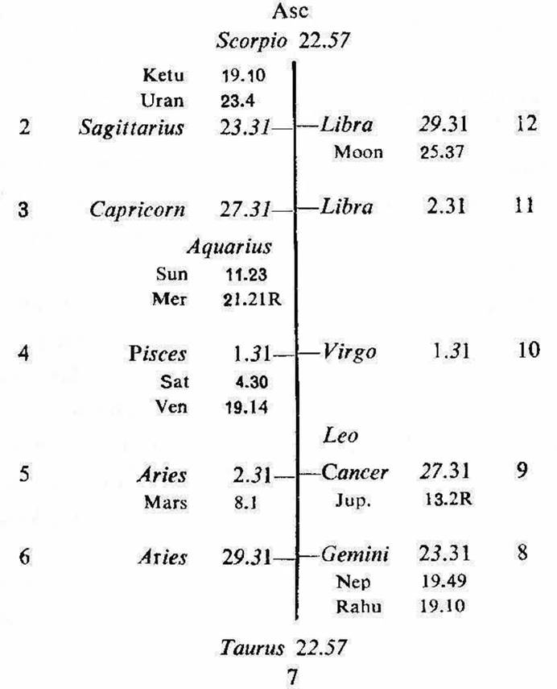
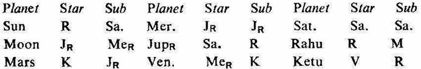

Male. Birth 24-2-1908 Monday; 2-10 A.M. I.S.T; 23°N 2', 72°E 35'; Ayanamsa 22° 29'.


1. The native of this horoscope is a double graduate, a very intelligent and a widely read man. But he is penniless and not steady in life. Because the planets are peculiarly connected with the houses 6, 8 and 12 in general. We will discuss some planets dealing with the houses 2 and 10.
2. The planet Moon is in the star Jupiter which owns the 2nd, occupies the 8th and is retrograde. It is in the sub Mercury which owns 8 and is retrograde. Thus Moon is the significator of 2 and 8 and connected with 8.
The star lord Jupiter occupies the 8th from its own sign Sagittarius which is on the 2nd cusp. So Jupiter becomes weak to give the results of the 2nd house. Hence the planet Moon automatically becomes weak to give the results of the 2nd house. Moreover its sub lord Mercury owns 8, consequently the planet Moon cannot give desirable results regarding money matters.
3. The planet Mercury is in the star and sub of Jupiter. So it is the significator of 2 and 8; and as discussed above Mercury is also unable to improve the monetary condition of the native.
4. The planet Venus is in the star Mercury which owns 10 and 8 and is retrograde. It is in the sub Ketu (which being in the star Venus owning 12 represents Venus) in 1. Thus the planet Venus is the significator of 8, 10 and connected with 1 and 12.
The star lord Mercury occupies the 6th from its own sign Virgo which is on the 10th cusp. So Mercury becomes weak to give the results of the 10th house. Hence the planet Venus automatically becomes weak to give the results of the 10th house. Moreover its sub lord Ketu being connected with 12, the planet Venus cannot give desirable results regarding advancement in service or profession, status or honourable living etc.
5. In this horoscope Rahu in Gemini represents Mercury the owner of 8; and Ketu represents Venus the owner of 12. Except Saturn all the planets have to give the results of 8 and 12, because they are either in the star or sub of Rahu, Ketu, Mercury or Venus. So they bring poverty.
6. The native was born during the period of Jupiter with balance of 9Y 3M 4D. At present he is running the period of Venus since 28-5-1960.
In fact in the periods of Saturn, Mercury, Ketu and Venus during the sub periods of Moon and Mercury the native suffered hardships in finance and during the sub periods of Venus he could not build his career, but he experienced difficulties and he is a pauper throughout his life.
1 (a) The 4th house is occupied by the owner of 12 (Venus). The owner of 4 (Jupiter) occupies the 8th and it is aspected by the owner of 1 and 6 (Mars). So the house 4 is connected with the house 12 (loss) and the owner of 4 is connected with the house 1 (self), 6 (debt) and 8 (gain to others). This denotes that the native will have to lose the building on account of debt.
(b) The sub lord of the 10th cusp (building to the buyer) is Jupiter. Jupiter owns 4, it is in the star Saturn owning 3 and in the sub Rahu (representing Mercury which owns 10 and occupies 3). So Jupiter is the significator of 3 (absence of building, it being 12 to 4) and connected with 3 & 10 (building to the buyer); and it indicates selling away of the building. The star lord Saturn is in conj. with the owner of 12 (Venus-losing the building).
2. The building was sold off during the period of Venus in 1960 or so. Venus owns the 12th and occupies the 4th, it is in the star Mercury owning 10 and occupying 3; and in the sub Ketu (representing Venus owning 12). So Venus is the significator of 3, 10 and connected with 12. Hence the native lost his building.
The ascending sign Scorpio (which corresponds to the 8th house), its owner Mars (in the star Ketu representing JupiterR in 8), its star lord MercuryR (owns 8, in the star and the sub JupiterR in 8) and its sub lord Moon (in the star JupiterR in 8 and in the sub MercuryR owning 8) are closely connected with the house 8.
His out look on life, his mentality, his way of life and his personal attributes centre round the 8th house. So he leads a shabby and uncleanly life and he is the architect of his own misfortune.